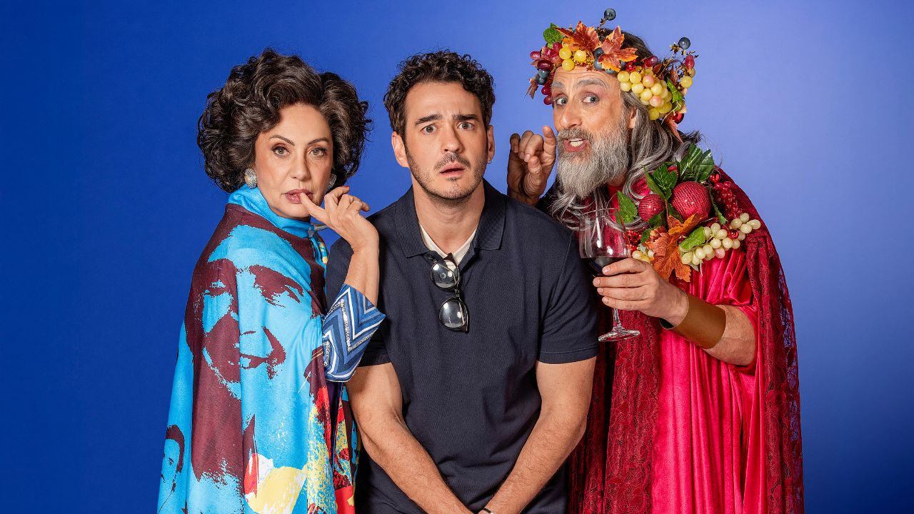

Março transforma o BTG Pactual Hall em palco de grandes encontros entre música e memória cultural

O BTG Pactual Hall entra em março de 2026 com uma programação que reafirma o espaço como endereço de encontros potentes entre gerações, linguagens e afetos. Entre um show inédito que reverencia vozes femininas da MPB, a estreia de uma superprodução que celebra a história da televisão brasileira e o retorno de uma das intérpretes mais respeitadas do país, o mês combina diversidade, história e grande formato em um mesmo palco.
Catto & Assucena abrem o mês com show inédito de tributo às grandes vozes femininas
Na agenda musical, Catto & Assucena apresentam um espetáculo inédito que celebra artistas que moldaram o imaginário da canção brasileira — de Rita Lee, Gal Costa e Maria Bethânia a Marina Lima e Alcione. Entre sucessos consagrados e composições autorais, o show transforma o palco em um espaço de liberdade, identidade e celebração da diversidade, com direção musical de Fábio Pinczowski e Rafael Acerbi e acompanhamento de Michelle Abu e Beatriz Lima.Ingressos a partir de R$ 25.
“Espelho Mágico” estreia em 20 de março e celebra os 60 anos da TV Globo com superprodução e elenco de 32 artistas
A partir de 20 de março, o teatro recebe a estreia de Espelho Mágico, superprodução criada para comemorar os 60 anos da TV Globo. Escrita e dirigida por Gustavo Gasparani, com direção musical de Wladimir Pinheiro e produção da Aventura (Aniela Jordan e Luiz Calainho), a montagem marca a parceria da emissora com a produtora e reúne um elenco de 32 artistas.
O protagonista é Alfredo (vivido por Marcos Veras), um autor encarregado de escrever um espetáculo sobre a história da TV Globo. Diante da dimensão de personagens e acontecimentos, ele recorre à Nossa Senhora das Oito — personagem inspirada em Janete Clair, interpretada por Eliane Giardini — e, a partir desse encontro, a cena revisita figuras que atravessaram décadas de memória coletiva: de Emília, Odorico Paraguaçu, Sinhozinho Malta, Tieta, Lineu, Nenê, Bebel, Agostinho, Dona Armênia e Carminha a personalidades como Xuxa, Pedro Bial, Chacrinha e Roberto Carlos.
A trilha sonora reúne quase 40 números musicais marcantes de novelas e programas, como Brasil, Dancin Days, Pavão Misterioso, Per Amore, Irmãos Coragem, Ilariê, Lua de Cristal e Emoções, em uma encenação que presta tributo ao Teatro de Revista e à memória afetiva da televisão brasileira.
Mônica Salmaso encerra o mês com “Minha Casa” em apresentação única
Fechando março, no dia 31, Mônica Salmaso retorna a São Paulo com o aclamado Minha Casa. Após turnê de sucesso, o show celebra identidade, afeto e os muitos Brasis musicais, reafirmando a artista como uma das vozes centrais da música brasileira contemporânea.
Serviço | BTG Pactual Hall — março de 2026
Catto & Assucena
Data: março de 2026
Local: BTG Pactual Hall
Ingressos: https://bileto.sympla.com.br/event/114744/d/357105
Espelho Mágico – 60 anos da TV Globo
Estreia: 20 de março de 2026
Local: BTG Pactual Hall
Ingressos: https://bileto.sympla.com.br/event/114143/d/353873?share_id=1-copiarlink
Mônica Salmaso – Minha Casa
Data: 31 de março de 2026
Horário: 20h
Local: BTG Pactual Hall
Ingressos: https://bileto.sympla.com.br/event/112122/d/344220